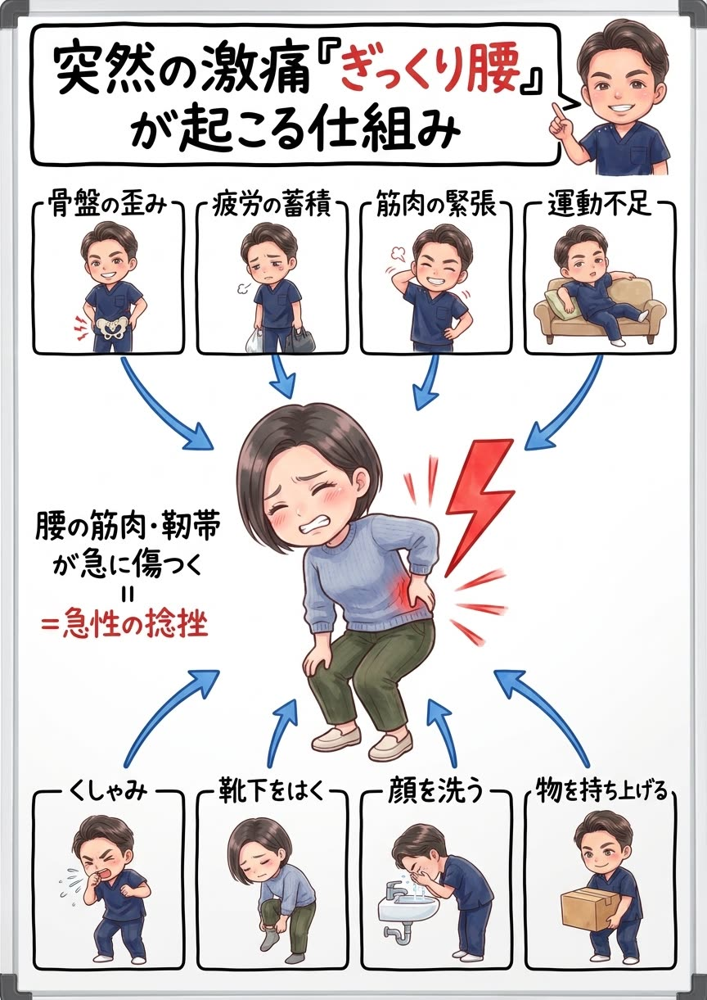
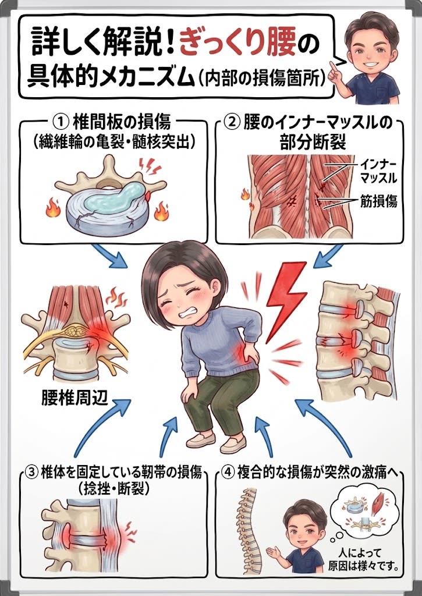
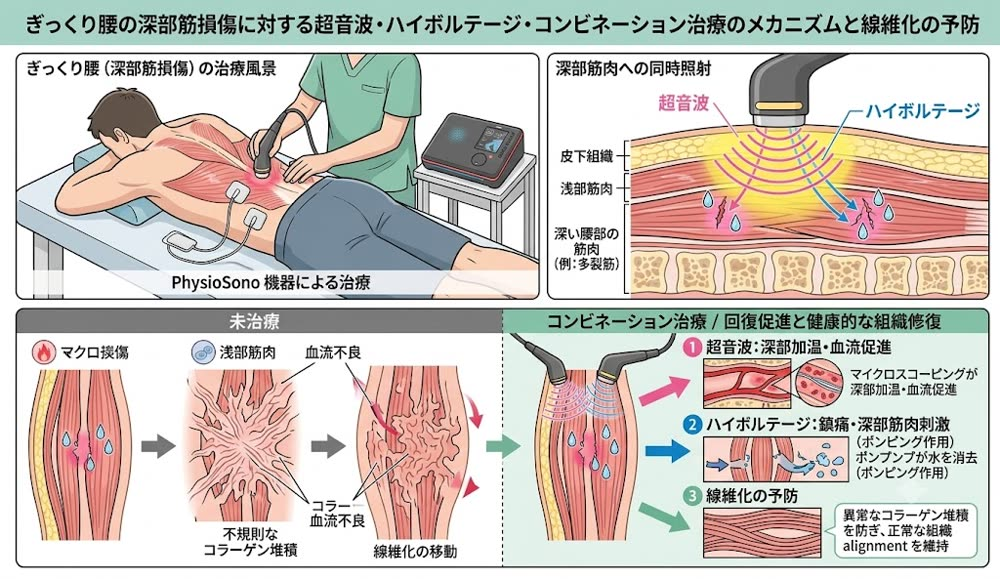

欧米で「魔女の一撃」と呼ばれる突然の激痛。最初の対処を間違えると回復が大きく遅れます。今つらい方は、まずお電話ください。
ぎっくり腰は「正しく・早く」対処できるかで回復スピードが大きく変わります。当院は急性のケガとして健康保険での施術にも対応しています。
ぎっくり腰の正体は、腰まわりの筋肉・靭帯・関節（椎間関節）に起きた急性の捻挫（炎症）です。「重い物を持った瞬間に」というイメージがありますが、実際にはくしゃみ・靴下を履く・顔を洗うといった、ごく日常的な動きで発症する方が少なくありません。
ではなぜ、そんな些細な動きで腰が壊れるのか。答えは、発症の“ずっと前”から、腰には疲労と歪みの「貯金」が溜まり続けていたからです。骨盤が歪むと、体の重みを支える負担が腰の一部の筋肉（脊柱起立筋や腰方形筋など）に集中します。その筋肉は休む間もなく緊張し、硬く縮んで血流が悪化——いわばピンと張りつめた輪ゴムのような状態で、毎日をやり過ごしているのです。
そこへ、前かがみやひねりといったほんの少しの負荷が最後の一押しとして加わった瞬間、張りつめた組織が限界を超えて損傷し、炎症が一気に燃え上がる——これがぎっくり腰の本当の仕組みです。つまりぎっくり腰は「突然」ではなく、時間をかけて準備されていた結果。だからこそ、痛みが引いた後に“貯金”そのものを減らさなければ、また繰り返しやすくなってしまうのです。

「ぎっくり腰」とひとことで言っても、腰の内部で傷ついている場所は人によって違います。主な損傷箇所は次の3つです。
① 椎間板の損傷——背骨のクッションである椎間板の外側の壁（繊維輪）に亀裂が入ったり、中身のゼリー状の組織（髄核）が飛び出しかけたりするケース。
② 腰のインナーマッスルの部分断裂——背骨のすぐそばで体を支える深層の筋肉（多裂筋など）の線維が、部分的にプチプチと切れてしまうケース。
③ 椎体を固定している靭帯の損傷——背骨どうしをつなぎ止めている靭帯が、捻挫のように伸ばされたり部分的に断裂したりするケース。
実際には、これらが複合的に重なって「突然の激痛」になっていることがほとんど。どこがどの程度傷ついているかで、正しい対処も回復までの道のりも変わります。だからこそ、最初の見極めが大切なのです。


ここが、ぎっくり腰でいちばん誤解されているポイントです。痛みが引いたのは、炎症が治まっただけ。傷ついた組織そのものが、元どおりに治ったわけではないのです。
一度傷ついた筋肉や靭帯は、修復の過程で硬くなります。ケガをした皮膚に硬い「傷あと」が残るのと同じことが、腰の深部でも起こります。損傷部に修復材料のコラーゲンが不規則に積み重なると、組織は本来のしなやかな並びを失い、硬くて伸びない“瘢痕（はんこん）”として線維化してしまうことがあるのです。
この硬くなった組織は、柔軟性がなく血流も乏しいため、次の負荷にとても弱い。だから同じところを何度も痛める——「ぎっくり腰はクセになる」の正体は、この“治りきっていない傷あと”です。
では、どうすればいいのか。答えはひとつです。急性期に炎症を正しく抑え、そのあと組織が瘢痕化しないよう“きれいに”修復させる。この2つのステージを、順番どおりきちんとやりきることに尽きます。そしてこれは、マッサージで揉んで届く深さの話ではありません。
当院のぎっくり腰治療は、「今の激痛を取る」だけでなく「傷あとを残さず治しきる」ことをゴールに、状態に合わせて3つのステージで進めます。
発症〜数日の炎症が燃えている時期は、患部に負担をかけないことが最優先。無理に揉んだり動かしたりせず、炎症を抑える施術と正しい安静・アイシングの指導で、「今の激痛」を最短で落ち着かせます。ぎっくり腰は急性のケガのため、健康保険での施術にも対応しています。つらいその日に、まずお電話ください。
痛みが落ち着いてきたら、ここからが当院の治療の核心です。傷ついた組織が瘢痕化しないよう、超音波とハイボルテージ（高電圧電気治療）を、損傷した患部にピンポイントで同時照射（コンビネーション治療）します。
超音波は、1秒間に数百万回の微細な振動で深部の組織を温め、血流を促進。修復に必要な酸素と栄養を損傷部に届けます。ハイボルテージは、皮膚抵抗を抑えて深部まで届く電気刺激で痛みを鎮めながら深部の筋肉をポンプのように動かし、損傷部にたまった腫れ・余分な水分を流し出します。
この2つを組み合わせることで、コラーゲンが不規則に固まるのを防ぎ、組織が本来のしなやかな並びで修復される＝線維化（瘢痕化）の予防につながります。表面を揉むマッサージでは届かない、背骨のそばの深いインナーマッスル（多裂筋など）の損傷まで的確にアプローチできるのが、この治療の最大の強みです。


組織がきれいに治ったら、最後は再発予防です。ぎっくり腰の引き金になった座り方・中腰動作・物の持ち上げ方・運動不足——腰に疲労の“貯金”を溜め続けてきた生活習慣を、カウンセリングで深くお聞きしたうえで、あなたの生活に合わせて具体的に見直します。ご自宅でできるセルフケアもお伝えし、「次」が来ない腰づくりを継続的にサポートします。

発症した状況・痛みの場所と強さを確認します。動けないほどつらい場合は、無理のない体勢のままお話を伺いますのでご安心ください。

炎症の程度と動きの制限をチェックし、今日やるべきこと・やってはいけないことを明確にお伝えします。

急性期は炎症を鎮める施術を最優先。痛みの経過に合わせて超音波×ハイボルテージによる組織修復ステージへ移行し、傷あとを残さず治しきるところまで伴走します。
はい。ぎっくり腰は「急性の腰の捻挫」にあたるため、健康保険を使って施術を受けられるケースが多いです。受付時に保険証をご持参ください。
無理に動かず、痛みが少ない姿勢（横向きで軽く膝を曲げる等）で安静にし、最初の1〜2日は冷やすのが基本です。温める・強くもむ・無理なストレッチは悪化の原因になるため避け、できるだけ早めにご来院ください。
痛み自体は1〜2週間で落ち着くことが多いですが、痛みが引いたのは炎症が治まっただけで、傷ついた組織が治りきったわけではありません。損傷部が硬い傷あと（線維化）として残ると再発しやすくなるため、超音波・ハイボルテージできれいに治しきるケアまで行うことをおすすめします。